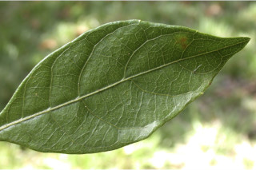
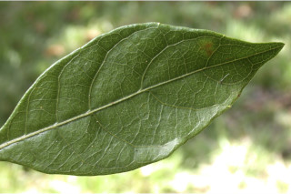
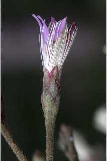
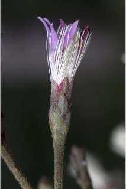
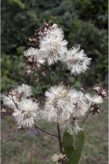
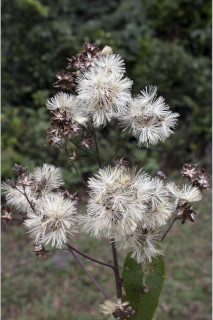

Small trees, up to 8 m tall.
8ಮೀ ಎತ್ತರದವರೆಗೆ ಬೆಳೆಯುವ ಸಣ್ಣ ಮರಗಳು.
8 മീറ്റര് വരെ ഉയരത്തില് വളരുന്ന ചെറുമരങ്ങള്.
சிறியமரம், 8 மீ. வரை வளரக்கூடியது.
Branchlets terete with scars of fallen leaves, puberulous.
ಕಿರುಕೊಮಬೆಗಳು ದುಂಡಾಗಿದ್ದು, ಉದುರಿ ಹೋದ ೆಲೆಗಲ ಗುರುತುಗಳನ್ನು ಹೊಂದಿದ್ದು, ಸೂಕ್ಷ್ಮ ಮೃದು ತುಪ್ಪಳ ಸಹಿತವಾಗಿರುತ್ತದೆ.
ഇലകൊഴിഞ്ഞ അടയാളങ്ങളോടുകൂടിയ, ഉപശാഖകള് ഉരുണ്ടതാണ്, ചെറുതായി രോമാവൃതവും.
Leaves simple, alternate, spiral, clustered at twig ends; petiole 0.6-1.2 cm long, flat above, glabrous; lamina 4-15 x 2.3-7.5 cm, obovate, apex obtuse or rounded, base cuneate, margin undulate, coriaceous, glabrous, midrib flat above; secondary_nerves 5-8 pairs; tertiary_nerves reticulo-percurrent.
ലഘുവായ ഇലകള്, ഏകാന്തര ക്രമത്തില്, സര്പ്പിളാകൃതിയില്, കമ്പുകളുടെ അറ്റത്ത് കൂട്ടമായി ക്രമീകരിച്ചിരിക്കുന്നു; ഇലഞെട്ടിന് 0.6 മുതല് 1.2 സെ.മീ വരെ നീളം, മുകളില് പരന്നാണിരിക്കുക, അരോമിലം; പത്രഫലകത്തിന് 4 സെ. മീ മുതല് 15 സെ.മീ വരെ നീളവും 2.3 സെ. മീ മുതല് 7.5 സെ.മീ വരെ വീതിയും അപഅണ്ഡാകാരം, പത്രാഗ്രം ഉപകോണാകാരമോ വൃത്താകാരത്തിലോ ആണ്, പത്രാധാരം ആപ്പിന്റെ ആകൃതിയില്, അരികുകള് തരംഗിതമാണ്, കടലാസ് പോലത്തെ പ്രകൃതം, അരോമിലം, മുഖ്യസിര മുകളില് പരന്നതാണ്; ദ്വിതീയ ഞരമ്പുകള് 5 മുതല് 8 വരെ ജോഡികള്; ത്രീതീയ ഞരമ്പുകള് ജാലികാ പെര്കറന്റ് ആണ്.
சிறிய நுனிக்கிளைகள் குறுக்குவெட்டுத் தோற்றத்தில் வளையமானது மற்றும் இலை உதிர்ந்த தழும்புகளுடையது, சிறு உரோமங்களுடையது.
Flower heads in terminal panicles, purple.
ಎಲೆಗಳು ಸರಳವಾಗಿದ್ದು ಪರ್ಯಾಯ ಹಾಗೂ ತುದಿಯಲ್ಲಿ ಗುಂಪಾಗಿರುತ್ತವೆ; ಎಲೆತೊಟ್ಟು 0.6 ರಿಂದ 1.2ಸೆಂ.ಮೀ. ಉದ್ದವೊದ್ದು ಮೇಲ್ಭಾಗದಲ್ಲಿ ಚಪ್ಪಟೆಯಾಗಿದ್ದು ರೋಮರಹಿತವಾಗಿರುತ್ತವೆ; ಎಲೆಪತ್ರಗಳು 4-15 x 2.3-7.5ಸೆಂ.ಮೀ. ಗಾತ್ರ, ಬುಗುರಿಯ ಆಕಾರ, ಚೂಪಲ್ಲದ ಅಥವಾ ಗುಂಡಾದ ತುದಿ, ಬೆಣೆಯಾಕಾರದ ಬುಡ, ಅಲೆಯಾಕಾರದ ಅಂಚು, ತೊಗಲನ್ನೋಲುವ ಮೇಲ್ಮೈ ಹೊಂದಿದ್ದು ರೋಮರಹಿತವಾಗಿರುತ್ತವೆ. ಮಧ್ಯನಾಳ ಪತ್ರದ ಮೇಲ್ಭಾಗದಲ್ಲಿ ಚಪ್ಪಟೆಯಾಗಿರುತ್ತದೆ; ಎರಡನೇ ದರ್ಜೆಯ ನಾಳಗಳು 5 ರಿಂದ 8 ಜೋಡಿಗಳಿರುತ್ತವೆ. ಮೂರನೇ ದರ್ಜೆಯ ನಾಳಗಳು ಜಾಲಬಂಧ ನಾಳ ವಿನ್ಯಾಸದಲ್ಲಿದ್ದು ಎಲೆದಿಂಡಿಗೆ ಅಡ್ಡವಾಗಿ ಕೂಡುತ್ತವೆ.
ഊതനിറത്തിലുളള പൂക്കള് ഹെഡുകളില് ഉച്ഛസ്ഥ പാനിക്കിളുകളായി ഉണ്ടാകുന്നു.
இலைகள் தனித்தவை, மாற்றுஅடுக்கமானவை, சுழல் போல் அமைந்தவை, நுனிக்கிளையில் இலைகள் கூட்டமாக மற்றும் நெருக்கமாகமைந்தவை; இலைக்காம்பு 0.6-1.2 செ.மீ. நீளமானது, பிளேனோகான்வக்ஸ், உரோமங்களற்றது; இலை அலகு 4-15 X 2.3-7.5 செ.மீ. தலைகீழ் முட்டை வடிவானது, அலகின் நுனி மழுங்கியவை அல்லது வட்டமானது, அலகின் தளம் ஆப்பு வடிவானது, அலகின் விளிம்பு அலைப்போன்றது, கோரியேசியஸ், கீழ்பரப்பு உரோமங்களற்றது, மையநரம்பு அலகின் மேற்பரப்புக்கு சமமானது; இரண்டாம் நிலை நரம்புகள் 5-8 ஜோடிகள்; மூன்றாம் நிலை நரம்புகள் வலைப்பின்னல்-பெர்க்கரண்ட்.
Achenes ribbed with yellow glands; 1-seeded.
ಹೂಗಳನ್ನೊಳಗೊಂಡ ಚೆಂಡುಮಂಜರಿ ತುದಿಯಲ್ಲಿನ ಕವಲೊಡೆದ ಪುಷ್ಪ ಮಂಜರಿಯಲ್ಲಿದ್ದು ಕೆನ್ನೀಲಿ ಬಣ್ಣವನ್ನು ಹೊಂದಿರುತ್ತವೆ.
അക്കീനുകള് മഞ്ഞ ഗ്രന്ഥികളാല് വരമ്പിട്ടതാണ്.
சிரமஞ்சரி, தண்டின் நுனியில் காணப்படும் பேனிக்கிள், பர்புள் நிறமானது.
 

 



 
